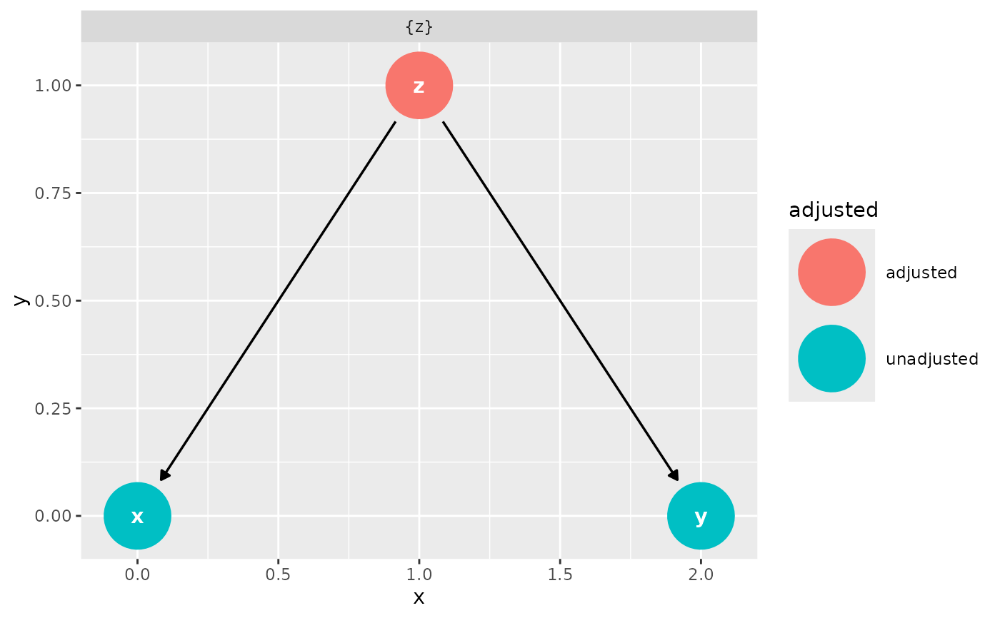

aes_dag() is a wrapper around aes() that specifies x, y, xend, and
yend, which are required for most DAG visualizations. It merges any
additional aesthetics, e.g. color or shape, with the default aesthetic
mappings.
Value
A ggplot2 aesthetic mapping object that includes both the default
DAG aesthetics and any user-specified aesthetics.
Examples
library(ggplot2)
confounder_triangle() %>%
dag_adjustment_sets() %>%
ggplot(aes_dag(color = adjusted)) +
geom_dag() +
facet_wrap(~set)
